STAY · 待确认
住宿待确认
酒店尚未确定。确认后将补充准确地址、交通定位和精确物业图片。
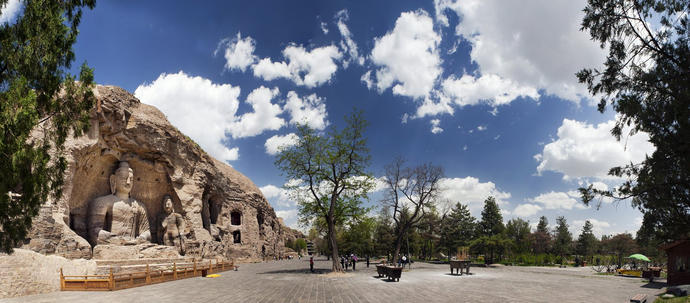
DATONG · NORTHERN SHANXI
以五天串联大同、浑源与应县，从北魏石窟走到辽金木构，并为建筑摄影和古城慢游留下从容停驻。
大同与晋北古建线的行程、住宿、餐饮与出发准备，都可以从这里继续。
TRANSPORT
补充具体航班、车次、日期、机场或车站后，本页会同步更新全部交通卡与说明。
THE ROUTE
高铁赴同12:21从清河站乘D1127出发，14:38抵达大同南站；车上整理相机、电池与进城路线。
下午善化寺抵达后先寄放双肩包，再按当天末次入园时间参观善化寺；若来不及则只走古城街巷。
晚上古城夜景在鼓楼附近吃烧麦与黄花菜，随后拍摄古城墙蓝调和亮灯后的城门轮廓，21:00前收尾。
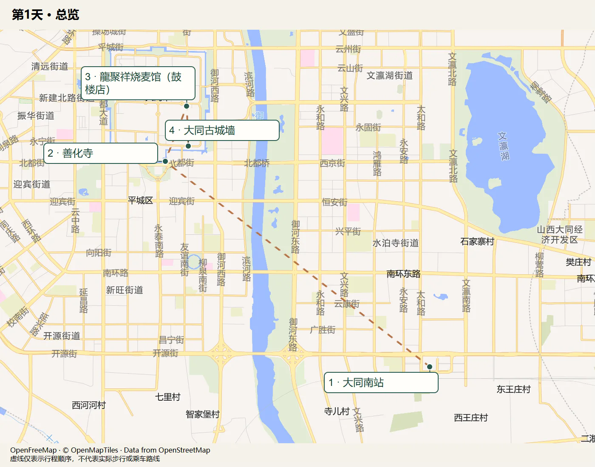
真实街道底图截图，可离线查看；连线只表示行程顺序，不是实际导航路线。
云冈石窟尽早抵达云冈石窟，优先参加官方讲解，慢看昙曜五窟、中区洞窟与露天大佛并预留拍摄时间。
下午华严寺返回古城午餐后进入华严寺，重点观察薄伽教藏殿、大雄宝殿及辽金木构细节。
晚上鼓楼街区沿华严寺至四牌楼一带顺路浏览文创和地方特产，只购买便于双肩包携带的小件。
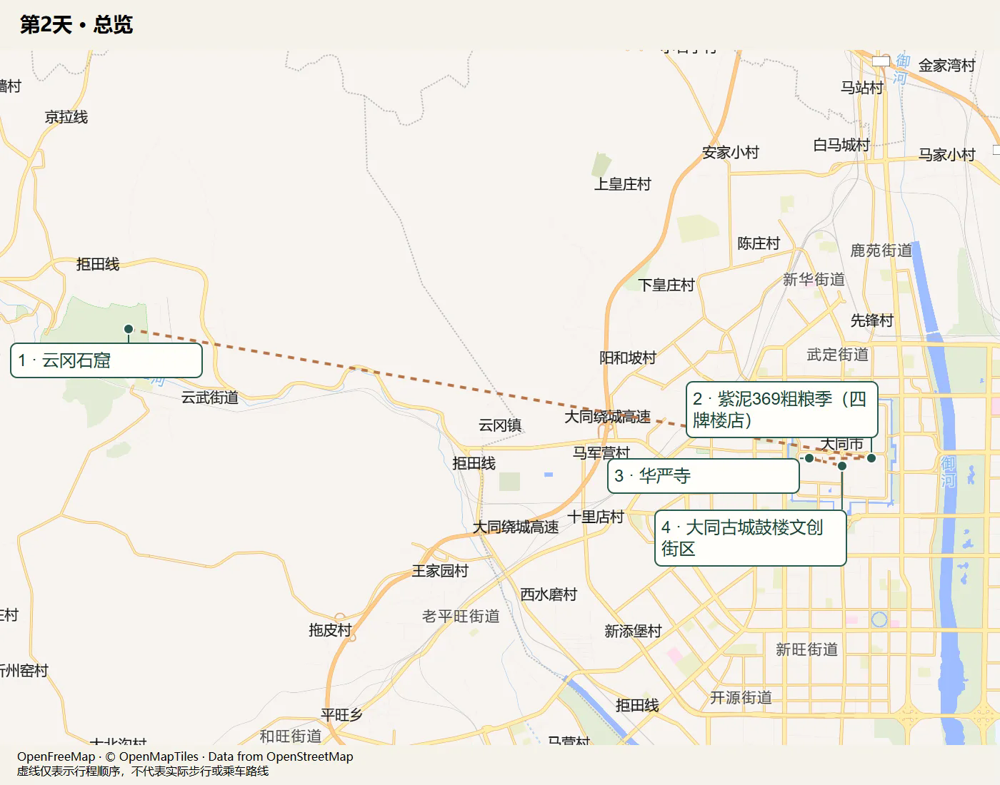
真实街道底图截图，可离线查看；连线只表示行程顺序，不是实际导航路线。
悬空寺早班抵达后先拍崖壁全景，再按预约、天气和限流状态决定登临；不因排队压缩恒山的撤退缓冲。
下午恒山索道版由景区交通转往恒山，优先索道上山；体力、天气和时间均合适才步行下山，否则索道往返。
晚上浑源收尾下山后优先进入浑源县城休息并住宿；若住宿仍未落实，按已核实的晚间交通返回大同，不临时加雁门关或应县。
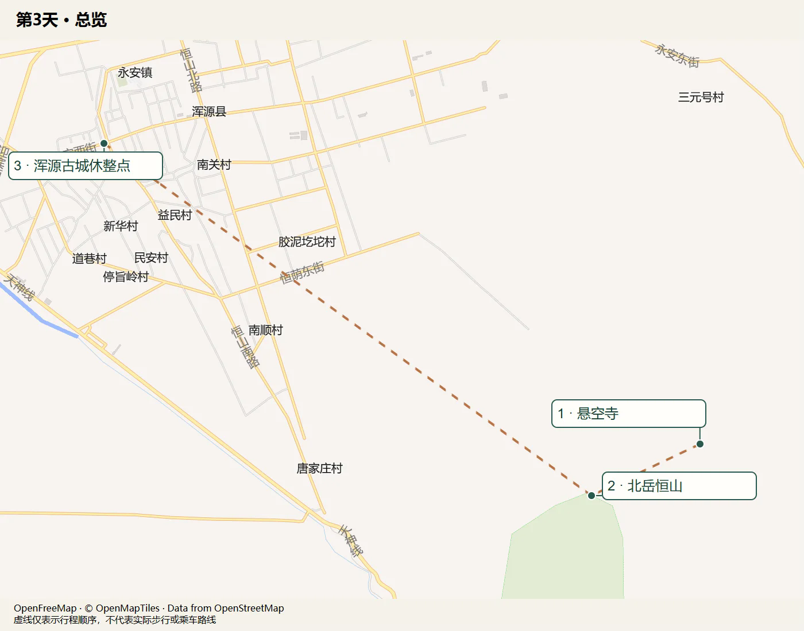
真实街道底图截图，可离线查看；连线只表示行程顺序，不是实际导航路线。
圆觉寺塔与永安寺清晨先看圆觉寺塔外观，再进入永安寺，把完整时间留给元代木构与水陆壁画。
下午应县木塔州署仅在衔接顺畅时短停，午餐后转往应县，环塔观察塔身比例、斗栱与不同方向光线。
晚上返回大同按已核实的县际交通或正规拼车返回大同，晚间不追加远距离景点。
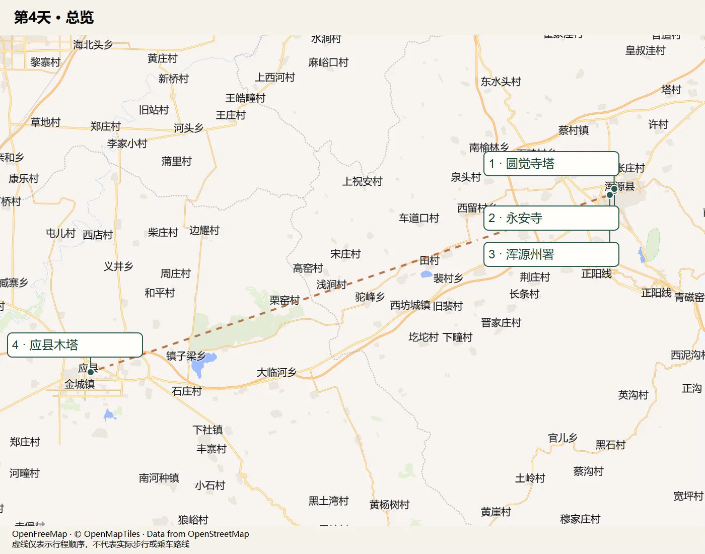
真实街道底图截图，可离线查看；连线只表示行程顺序，不是实际导航路线。
法华寺与善化寺先看法华寺白塔，再补首日可能错过的善化寺；若善化寺已完整参观，就把时间留给法华寺和古城慢走。
下午午餐、取行李与进站在古城完成午餐后返回住宿取双肩包，不再新增景点，提前前往大同南站。
晚上高铁返京拟乘G2540于18:36从大同南站出发、20:13抵达清河；出发前再次确认出票状态和检票口。
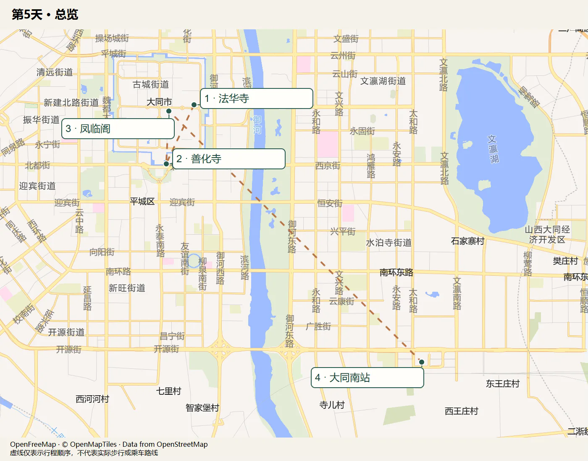
真实街道底图截图，可离线查看；连线只表示行程顺序，不是实际导航路线。
SIGHTS
五世纪至六世纪中国佛教石窟艺术的核心遗存。按已确认路线安排半天以上，并优先使用景区官方讲解或官方公益讲解，给露天大佛、昙曜五窟与中区洞窟留出拍摄和慢看时间。
开放开放时间与分时预约以云冈研究院、云冈石窟文旅当日公告为准；现行公开信息要求实名线上预约。 · 未确认；以景区最新公告为准
Google Maps ↗来源 ↗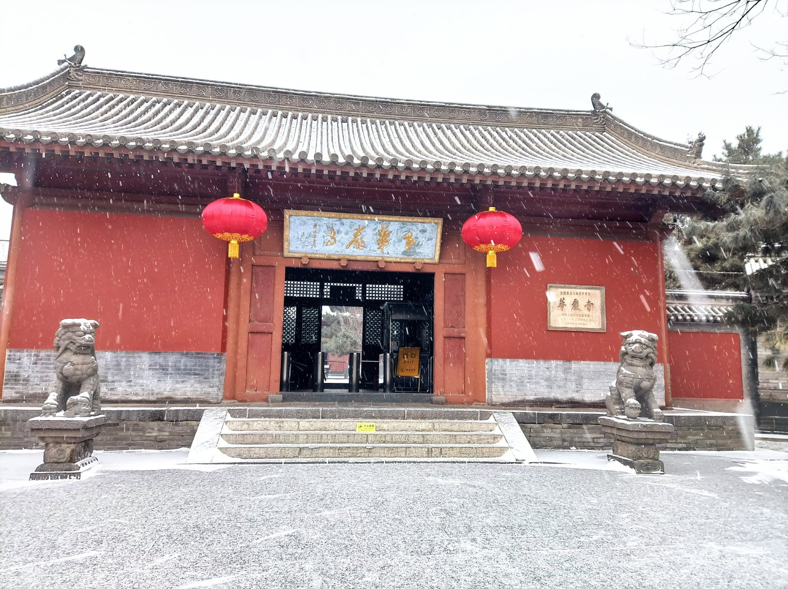
大同古城内的重要辽金寺院，重点看薄伽教藏殿、辽塑与大雄宝殿。午后到访时先确认末次入园时间，拍摄以建筑轴线、鸱吻和殿宇尺度为主。
开放公开城市服务指南列旺季通常08:30–18:00；节假日可能临时延时，出行前以景区公告为准。 · 未确认；以景区最新公告为准
Google Maps ↗来源 ↗保存辽金木构的古寺，山门与三圣殿尤其适合观察屋顶、斗栱与中轴空间。与华严寺同日下午串联，控制排队并服从殿内摄影规则。
开放开放时间随季节与活动调整；以大同市文物局及景区现场公告为准。 · 未确认；以景区最新公告为准
Google Maps ↗来源 ↗大同古城的夜游主轴。正式登城入口和当晚开放状态需现场确认；即使入口调整，也可沿护城河和城门外侧完成夜景拍摄。
开放夜间亮化常态化，但登城开放、限流和恶劣天气闭园以当天公告为准。 · 未确认；以景区最新公告为准
Google Maps ↗来源 ↗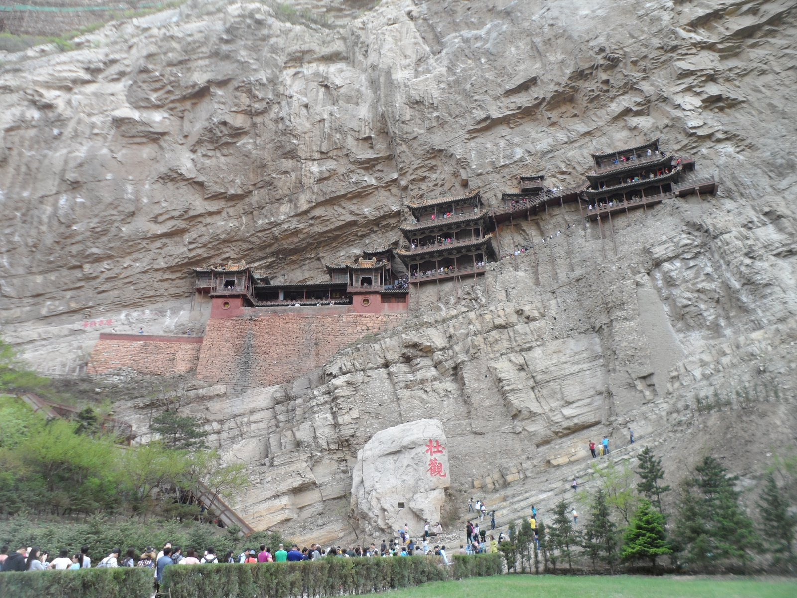
依翠屏峰崖壁构筑的古建筑群。新版路线先完成远观与登临，再转往恒山；登临受天气、限流与客流管理影响，延误时不压缩恒山撤退缓冲。
开放开放和登临售票受季节、天气、文保及客流管理影响，以恒山景区最新公告为准。 · 未确认；以景区最新公告为准
Google Maps ↗来源 ↗辽代木构高塔，以全木榫卯体系和多层斗栱著称。下午抵达后优先绕塔观察比例、檐口与不同方向光线，手账或活动名额仅在官方渠道开放时参与。
开放开放、票务及附加体验以应县木塔景区当日公告为准。 · 未确认；以景区最新公告为准
Google Maps ↗来源 ↗古城东部以元代白塔为辨识重点的寺院，作为华严寺或善化寺客流过大时的同区替换，不作为额外硬塞的第九个景点。
开放开放安排以现场公告为准。 · 未确认；以景区最新公告为准
Google Maps ↗来源 ↗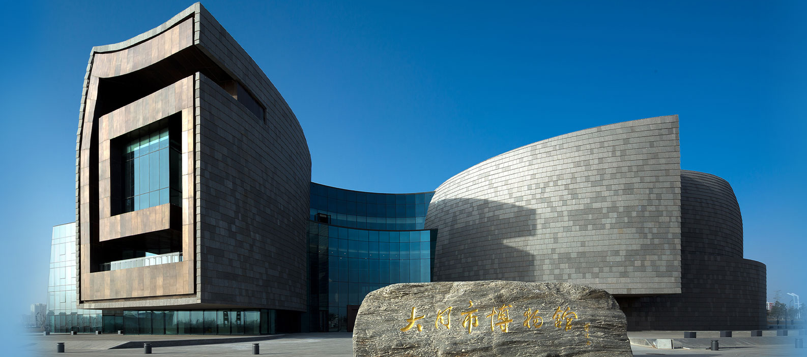
以北魏平城、辽金西京等城市历史为主线，适合在石窟和古建之后补齐大同历史脉络。安排半天看核心展厅，并为文物细节和建筑空间留出拍摄时间。
开放周二至周日09:00–17:00，16:30停止入馆；周一通常闭馆，节假日安排以馆方最新公告为准。 · 周一（法定节假日开放安排以最新公告为准）
Google Maps ↗来源 ↗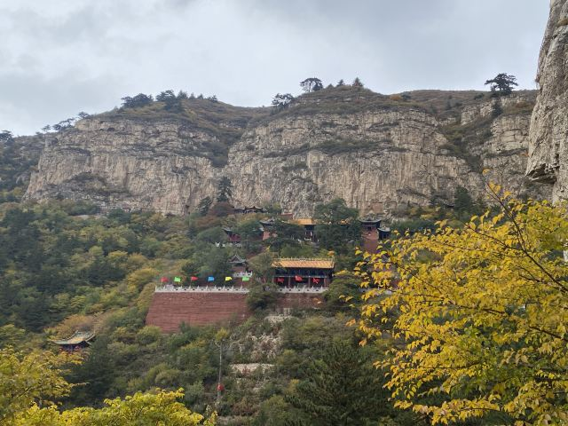
北岳恒山的山岳与寺观线。9月28日采用索道上山方案：体力与天气允许时步行下山；膝踝不适、风雨、索道排队或时间不足时改索道往返，不追求登顶打卡。
开放2026年5月6日至9月30日公开通告列恒山8:00–17:30、索道8:00–18:00；节假日和天气调整以恒山景区当日公告为准。 · 天气、检修或临时管控时可能调整
Google Maps ↗来源 ↗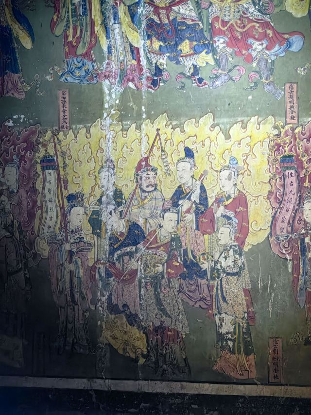
浑源古城内的元代古建与壁画重点。参观以传法正宗殿、水陆壁画和木构细节为主；遵守殿内禁闪光与现场摄影规则。
开放2026年5月6日至9月30日公开通告列8:00–18:00；临时保护、客流和节假日调整以现场公告为准。 · 未确认；以景区最新公告为准
Google Maps ↗来源 ↗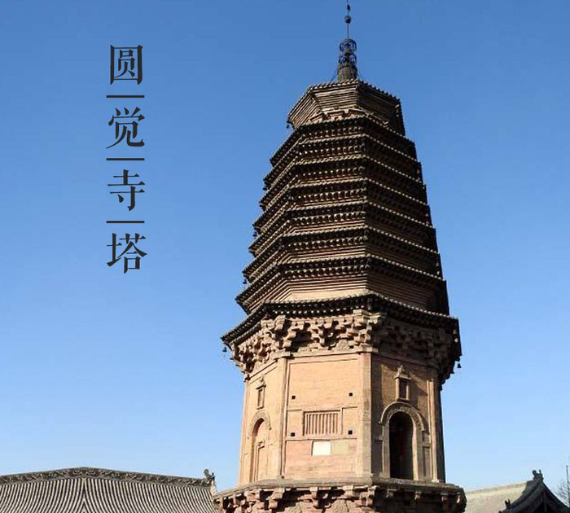
金代八角九级密檐式砖塔，适合作为浑源古城晨间第一站。以外观、砖仿木构与塔身比例观察为主，不为等待特殊开放压缩永安寺。
开放2026年5月6日至9月30日公开通告列8:00–18:00；以景区当日公告为准。 · 未确认；以景区最新公告为准
Google Maps ↗来源 ↗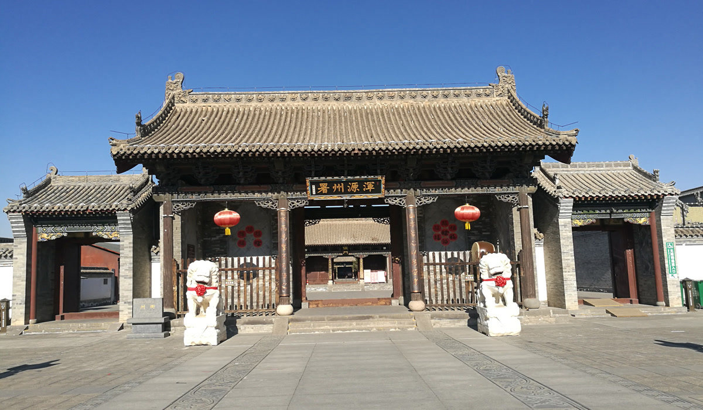
浑源古城内的官署文化体验点。本行程仅作为圆觉寺、永安寺之后的可舍弃项；交通衔接不佳或应县木塔时间受压时直接取消。
开放开放、演出与体验安排以浑源州署现场公告为准。 · 未确认；以景区最新公告为准
Google Maps ↗来源 ↗SHOPPING
以云冈石窟佛像艺术为灵感的本地萌系文创IP。只在官方授权渠道购买，优先选择体积小、便于随身携带的挂件或小号玩偶。
为什么值得买与云冈石窟主题直接相关，也回应用户提供的他人行程线索。
适合送给喜欢轻量文创、希望购买大同辨识度纪念品的人
哪里买：云冈石窟或大同古城内的官方授权销售点；不为购买专程绕路。核对官方授权标识、吊牌和售后信息；热门款缺货时不追高。大同区域公用品牌农产品，适合选密封小包装的干黄花菜或黄花酱，便于返程携带。
为什么值得买大同被称为中国黄花之都，产品来源与地方农业特色直接相关。
适合送给家庭烹饪、轻量食品伴手礼
哪里买：大同古城正规农特产店或带完整生产信息的商超渠道。查看产地、生产日期、配料表和密封状态；干黄花需充分浸泡并彻底加热后食用。国家级非遗剪纸门类之一，以染色和细密刻制见长。选择有作者、题材说明和防折包装的小幅作品。
为什么值得买兼具大同地区非遗辨识度和装饰收藏价值。
适合送给喜欢传统工艺、希望购买平面轻量纪念品的人
哪里买：大同古城正规非遗展销点或注明作者与产地的店铺。避免无作者、无产地说明的机器印刷仿品；要求硬纸板防折包装。浑源区域常见农特产，只作为悬空寺当天顺路备选，不把保健宣传当作医疗效果。
为什么值得买与浑源产地直接相关，适合希望购买干货类地方特产的人。
适合送给了解原料用途且需要小包装干货的人
哪里买：浑源县有完整厂名、产地、批次和保质期标识的正规门店。不购买夸大疗效或散装无标签产品；如正在服药或有基础疾病，食用前咨询专业人士。LOCAL EXPERIENCES
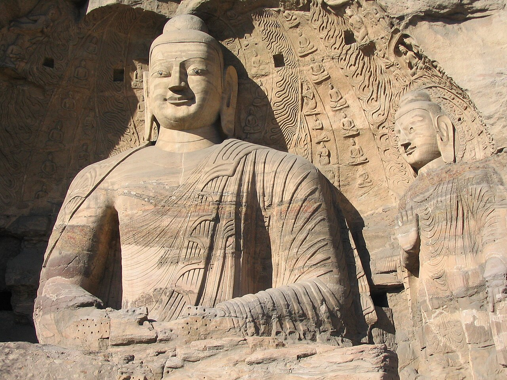
通过景区官方渠道预约讲解，把洞窟年代、造像风格与北魏平城背景串联起来；这比来源不明的现场讲解更可控，也能帮助以建筑和文物摄影为重点的旅行者判断哪些细节值得停留。
开放讲解场次与公益讲解名额以云冈研究院或云冈石窟文旅当天发布为准 · 未确认；随景区开放与讲解排班
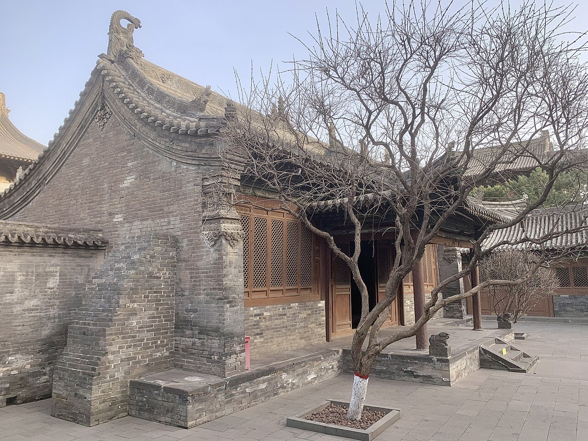
沿中轴比较薄伽教藏殿、大雄宝殿及鸱吻尺度，重点观察辽金木构空间和塑像，而不是只拍门头；体验与旅行者的历史文化和建筑摄影兴趣直接匹配，并与古城下午路线自然衔接。
开放随华严寺开放；旺季通常日间开放，末次入园以公告为准 · 未确认；以景区公告为准
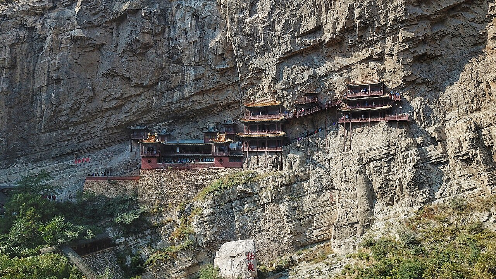
把上午体力集中到悬空寺狭窄栈道、楼阁连接与崖壁结构观察，再按时转往恒山执行索道版；体验直接服务建筑摄影，但必须接受限流、单向通行和天气管理。
风险评估栈道狭窄、台阶陡且高处暴露，遇大风降雨或明显眩晕时放弃登临，仅在观景区拍摄整体；不抢行、不逆行，遵守限流。
开放登临开放受天气、文保与客流影响，以景区当天公告为准 · 大风、降雨、维护或超限客流时可能暂停登临
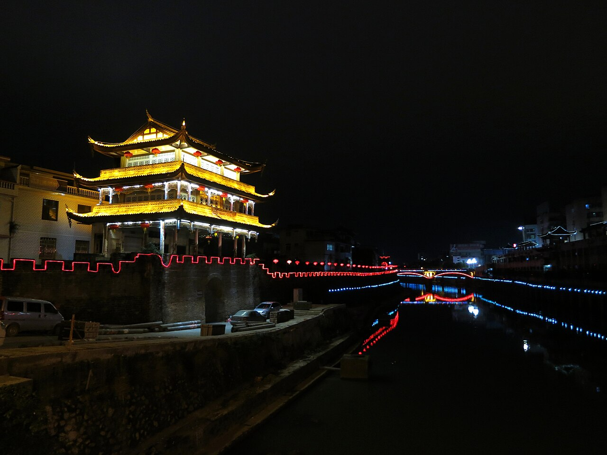
从城门、瓮城和护城河观察古城夜间轮廓，利用蓝调与亮灯后的反差完成城市建筑摄影；若登城入口临时关闭，沿护城河和城墙外侧仍可执行，不需要另行绕路。
开放夜间亮化常态化；登城开放与天气限流以当晚公告为准 · 恶劣天气或临时维护可能关闭登城入口
FOOD GUIDE
面条宽厚有嚼劲，常配猪肉卤、牛肉卤和豆腐干。
薄皮包裹羊肉、猪肉或三鲜馅，常蘸陈醋食用。
以当地土豆淀粉制作，口感滑韧，配辣椒、醋和豆干。
软糯黄米配桂花、沙棘等甜酸酱汁，适合作为共享甜点。
大同烧麦与山西菜 ·
招牌：雪花烧麦 · 香炒大同鲜黄花 · 浑源凉粉
第 1 天 · 已安排
为什么值得去位于鼓楼旁，和华严寺、九龙壁等古城路线衔接自然。用户特别提到黄花菜，适合安排一顿烧麦与晋北家常菜组合，但热门时段可能等位。
营业参考页面显示06:30–09:00、10:30–22:30；出发前以门店当日信息为准 · 未确认；以门店当天公告为准
晋北粗粮与山西菜 ·
招牌：黄米凉糕 · 沙葱油泼莜面 · 老大同什锦锅
第 2 天 · 已安排
为什么值得去四牌楼旁的粗粮晋菜餐厅，离鼓楼和古城核心步行区很近。两人可点一荤一粗粮一凉菜，避免大份菜叠加，适合古城游览后的正餐。
营业参考页面显示11:00–14:30、17:00–21:30；出发前以门店当日信息为准 · 未确认；以门店当天公告为准
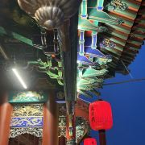
传统大同菜与烧麦 ·
招牌：三鲜百花烧麦 · 浑源凉粉 · 沙棘黄米凉糕
第 5 天 · 已安排
为什么值得去华严寺与鼓楼之间的传统名店，环境本身具有古建式观赏性，适合对烧麦和老大同菜感兴趣时体验。排队成本较高，不能为它压缩寺院参观。
营业参考页面显示11:00–14:00、17:00–20:30；热门日期应提前确认取号规则 · 未确认；以门店当天公告为准
本地连锁晋菜 ·
招牌：凯鸽风沙鸡 · 老大同过油肉 · 黄米面炸糕
备选 · 按区域顺路加入
为什么值得去本地连锁中餐的经济型选择，菜品可点半份对两人尤其友好，适合从古城南侧返程或不想长时间排热门店时使用。门店状态需临行前确认。
营业参考页面显示10:00–14:30、17:00–21:30；振兴街店曾有改造信息，出发前必须确认恢复营业 · 门店状态待临行前核验
北魏主题大同菜 ·
招牌：平城烤鸡 · 凉拌黄花菜 · 金米凉糕
备选 · 按区域顺路加入
为什么值得去以北魏主题空间和大同家常菜为特色，位置在迎宾东路，适合博物馆或城南返程途中安排。重点选平城烤鸡和黄花菜，不必为布景单独绕路。
营业参考页面显示11:00–14:00、17:00–21:00；出发前以门店当日信息为准 · 未确认；以门店当天公告为准
山西菜与晋北风味 ·
招牌：老大同过油肉 · 菜羊杂 · 黄糕
备选 · 按区域顺路加入
为什么值得去魏都大道上的传统山西菜餐厅，菜品覆盖过油肉、羊杂和黄糕，价格处在大同正餐的中等区间。仅在经过城南时安排，避免从古城核心专程往返。
营业参考页面显示11:00–14:00、17:30–21:00；出发前以门店当日信息为准 · 未确认；以门店当天公告为准
刀削面与大同小吃 ·
招牌：传统猪肉刀削面 · 浓香牛肉面 · 卤豆腐干
备选 · 按区域顺路加入
为什么值得去大同本地连锁刀削面，营业时段长、价格低，适合早出或晚归时快速解决一餐。选择传统猪肉面或牛肉面，加卤豆腐和鸡蛋即可。
营业参考页面显示07:00–22:00；出发前以门店当日信息为准 · 未确认；以门店当天公告为准
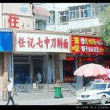
刀削面与本地快餐 ·
招牌：传统刀削面 · 烧肉 · 卤豆腐干
备选 · 按区域顺路加入
为什么值得去云中路上的老牌平价面馆，适合作为公共交通换乘前后的快速正餐。传统刀削面配烧肉、豆腐干或卤蛋即可，不需要另点大量主食。
营业参考页面显示06:30–14:00、17:30–21:00；出发前以门店当日信息为准 · 未确认；以门店当天公告为准
BEFORE DEPARTURE
按必须、建议、随缘排序，依次准备。
勾选仅表示已处理，不代表商家确认。
核对实名门票、官方讲解或公益讲解场次。
确认预约渠道、限流规则和天气影响。
确认大同至悬空寺、应县木塔及返程的当天班次。
确认9月30日18:36大同南至清河车票已成功出票。
优先古城西南侧连续住宿，确认晚到接待与寄存。
临行前核对开放时间及末次入园。
核对夜间开放、亮灯和天气关闭信息。
确认门票与任何限量体验的官方规则。
如临时加入，先确认预约和周一闭馆等安排。
凤临阁等排队过长时直接使用同区替代，不牺牲景点。
悬空寺登临前一天重点查看风雨信息。
班次临时调整时使用正规拼车作为备选。
LANGUAGE COMPANION
HIGH-FREQUENCY PHRASES
qǐng wèn zhí tōng chē zài nǎ lǐ shàng chē询问准确发车点
jīn tiān zuì hòu yì bān jǐ diǎn询问末班时间
zhè bān chē dào xuán kōng sì ma确认目的地
qù yìng xiàn zài nǎ lǐ huàn chē询问县际换乘
fǎn chéng piào xū yào tí qián mǎi ma确认返程购票规则
guān fāng jiǎng jiě hái yǒu míng é ma询问正规讲解余位
dēng lín piào zài nǎ lǐ hé yàn询问登临入口
zuì wǎn jǐ diǎn kě yǐ rù yuán确认末次入园
zhè lǐ yǔn xǔ pāi zhào ma拍摄前确认规则
xuán kōng sì hòu qù héng shān suǒ dào zài nǎ lǐ huàn chéng确认恒山索道接驳
wǒ men liǎng gè rén cài liàng dà ma询问份量
kě yǐ diǎn bàn fèn ma减少浪费
qǐng bǎ là jiāo fēn kāi fàng控制辣度
huáng huā cài shì nǎ yì zhǒng zuò fǎ确认黄花菜菜式
hái xū yào pái duō jiǔ判断是否换店
wǒ bù shǐ yòng shǎn guāng dēng kě yǐ pāi ma询问无闪光摄影
qǐng wèn sān jiǎo jià kě yǐ shǐ yòng ma询问器材限制
wǒ mǎ shàng pāi wán bù dǎng tōng dào说明不会影响他人
zhè lǐ shì dān xiàng tōng xíng ma确认栈道方向
qǐng bāng wǒ men pāi yì zhāng hé zhào礼貌请人协助
wǒ yǒu diǎn bù shū fu xū yào xiū xi说明身体状况
zuì jìn de fú wù zhōng xīn zài nǎ lǐ寻找工作人员
qǐng bāng wǒ lián xì jǐng qū gōng zuò rén yuán请求现场协助
wǒ de chē piào hái méi yǒu chū piào说明购票问题
qǐng wèn shī wù zhāo lǐng zài nǎ lǐ寻找遗失物品
HIGH-FREQUENCY PHRASES
Which gate should I use for this train?这趟车从哪个检票口进站？
Has this ticket been issued successfully?这张票是否出票成功？
Where is the waiting room?候车室在哪里？
What time does boarding start?什么时候开始检票？
Is this the train to Qinghe?这是去清河的列车吗？
Is an official guided tour available today?今天有官方讲解吗？
What is the last admission time?最晚入园时间是几点？
Is photography allowed here?这里允许拍照吗？
I will not use a flash.我不会使用闪光灯。
Where can we transfer to the Mount Heng cableway?去恒山索道在哪里换乘？
Where does the scenic shuttle depart?景区直通车在哪里发车？
What time is the last bus back?返程末班车几点？
Do we need to change buses?需要换乘吗？
Can I store a backpack here?这里可以寄存双肩包吗？
How long does the journey take?路上需要多久？
Is this portion enough for two people?这份菜够两个人吃吗？
Can we order a half portion?可以点半份吗？
Please serve the chili separately.请把辣椒分开放。
Which dish contains daylily?哪道菜有黄花菜？
How long is the wait?需要等多久？
I need a short rest.我需要休息一下。
Where is the visitor center?游客中心在哪里？
Please call a staff member.请联系工作人员。
I may have lost my camera accessory.我可能遗失了相机配件。
Where is the nearest exit?最近的出口在哪里？
LOCAL TRAVEL NOTES
长袖打底加轻薄防风层，按临近预报调整。早晚温差明显时把外套留在随身包内，不放在酒店。
悬空寺前一天重点查看风雨和景区公告。若出现大风或降雨提示，只在观景区拍摄并放弃登临。
石窟和木塔户外停留时间较长，准备防晒用品与饮水。进入洞窟和殿内前收好水杯，避免碰撞文物。
手册不编造远期预报，出发前三天再次复核。当天早晨还要查看一次，决定是否携带雨具。
洞窟与殿内看到禁拍或禁闪光标识立即收起设备。即使允许手机拍摄，也不要开启补光灯或外接闪光灯。
不倚靠、不跨越围栏，不触碰塑像和木构。相机包也不要放在栏杆、供桌或古建筑构件上。
拍摄中轴时快速完成，主动给参拜者留出通道。讲解团队经过时先停拍，不逆向穿插人群。
拍到居民或商户正脸前先征得对方同意。不同意时立即停止，不把镜头持续对准个人。
9月28日前核对发车点、班次和返程末班。截图保存运营方通知，并至少提前十五分钟到达。
G2540确认订单不等于出票成功，必须查看成功页。若仍在候补或待支付状态，要及时调整车次。
悬空寺到应县木塔至少预留换乘和等车时间。不要为了赶限量活动压缩午餐或返同缓冲。
不乘来源不明的黑车或现场随意拼车。需要备选时使用实名平台或正规运营车辆，并核对车牌。
在观景区拍整体即可，不勉强进入高处栈道。出现心慌或明显眩晕时立即告知同行人并休息。
登临时固定肩带，不外挂水瓶和相机附件。相机使用腕带或背带，换镜头时选择宽阔安全区域。
夜间城墙与寺院台阶不要边走边看手机。拍摄前先站稳，结束后收好设备再移动。
同行人互存电话并记住住宿地址。手机离线保存车票、酒店和景区客服信息，以防网络不稳。
支付宝或微信作为日常主支付方式。出发前确认账户可正常使用，并准备另一种方式作为备用。
准备小额纸币应对小店、寄存或网络异常。现金分开放置，不携带明显超出日常需要的金额。
支付后查看出票状态，不只保存确认订单页。核对乘车人、日期、车次和出发站均无误。
景区票、直通车和餐饮预约截图离线保存。截图只保留必要信息，对外分享时遮盖证件和订单号码。